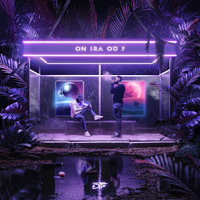
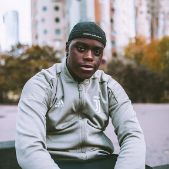
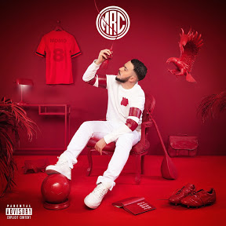
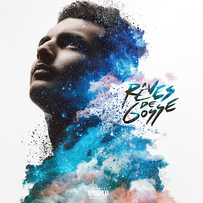
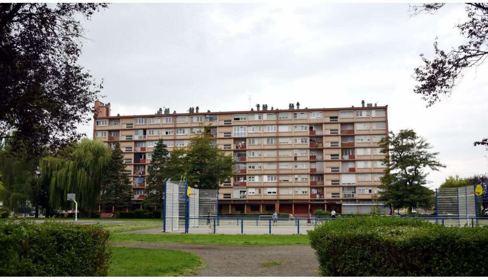
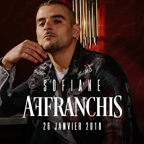
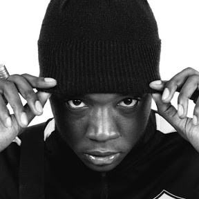
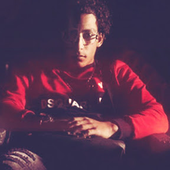
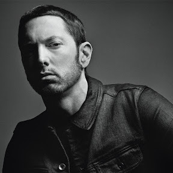
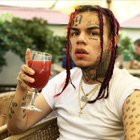

La musique depuis le début des années 2010 a su se diversifier, différents courants ont eu un impact dans la société, mais intéressons-nous surtout au rap, car de tous les courants de musique, c'est l'une des seules à avoir réussi à dominer le marché, cette culture du rap nous vient tout droit des US, en France elle s'est notamment implanté dans les cités avec des textes prônant la "débrouille" qui signifie subvenir à ses besoins peut une porte le prix, et mettant à l'appui une critique sur la société juger inactive face à leur situation dans les cités, obligeant certaines personnes est entrée dans la délinquance malgré eux; depuis les années 2000 le rap n'a de cesse évoluer arrivant aujourd'hui à un constat tragique qui montre l'impossibilité de solution face à leur problème, et l'abandon des quartiers par le gouvernement, aujourd'hui le rap dans ces quartiers dit "sensible" et devenu un moyen de pouvoir s'en sortir face à la petite délinquance faisant face à la cité, comme le dit brvmsoo dans l'une de ces musiques appeler "la débrouille", " si le rap ne pas marché, J'allais finir UberEat ou ouvrir un four" il nous montre bien que les trois seules solutions pour s'en sortir et de soi percer dans le rap; soit faire ubereat qui est une plateforme de livraison de repas (pas besoin de diplôme), ou ouvrir un "four" qui dans le jargon de la cité signifie ouvrir un réseau de stupéfiant (généralement vente de shit et de beuh, mais selon les secteurs cela peut se différencier des drogues plus douces aux plus dures), bien que toutes ces paroles ont un sens pour les personnes vivant dans toutes les cités de France, ce style s'est démocratisés dans la société et semble être écouté par toutes les classes sociales ; des riches en passant par la classe moyenne causant l'incompréhension de certains textes pour les personnes ne connaissant pas le désespoir de la cité, mais aussi l'entraide et le partage.
Le Cloud
Le Cloud est un style de musique rap qui vise à donner une impression de voler, de lenteur, voire même de planer, c'est une vision arienne du rap, qui semble rappeler les effets du cannabis, dans le langage de cité, on dirait que c'est un rap qui donne l'envie d'être défoncé ou d'être "habat" qui signifie défoncer en arabe; ce style de rap prône surtout la paix sociale, restreindre les différences d'appartenance, en France différent rappeur, on inclut dans leur musique du Cloud rap, le groupe dont tout le monde parle PNL est celui qui incarne le mieux cette vision du Cloud rap,
PNL
En effet PNL qui signifie Peace N. Lovés soit paix et argent (lovés qui signifie argent chez les jeunes) c'est implanté dans la scène de la musique Française depuis 2015, mais aussi dans la scène internationale ayant une forte communauté les suivant partout ailleurs dans le reste du monde. Ce groupe étant composé de 2 frères Ademo et NOS (respectivement Tarik et Nabil de leur vrai nom) vienne d'une cité en Corbeil-Essonnes nommé Les Tarterêts.
Ils ont été élever seuls par leurs pères qui leur ont inculqué de s'aimer entre eux plus que leur propre vie justifiant leurs slogans QLF (que la famille) une expression devenue quasi courante chez les jeunes à première abord la famille dont ils parlent serait la leur au sens propre, mais en cherchant plus loin la famille est l'ensemble de leur fan qui fait tous partie de la famille, chaque personne peut ainsi se référer à leur famille, mais ce qui s'identifie réellement sont les personnes originaires des quartiers, leur texte rappelant leur moment de galère et leur dégoût face à leur ancienne situation mais aussi leur gène face à leur situation actuelle d'artiste; dans un de leurs titres intitulé cœur NOS dit "et nique la vie d'artiste, tu sais, je viens d'en bas" il témoigne que malgré le succès sa condition de jeunes de banlieue le restera gravé et qu'il n'oublie pas d'où il vient et qui il est réellement, 3 albums à leur actif le monde Chico (2015), dans la légende(2016), Deux frères(2019) Ils se sont également fait connaitre pour leurs coups de com où leur production géniale a chaque sortie d'albums le tout avec un soupçon de mystère n'ayant accordé aucune interview depuis le début de leur carrière. Ils ont notamment sorti des clips vidéo (une sorte de mini film) accompagnés de quelque musique de leur album, et ils ont connu un franc succès. Ce clip est disponible gratuitement sur une plateforme gratuite de vidéo en Streaming (YouTube), ils sont au nombre de 4, de Naha puis Onizuka, en passant par Bène puis jusqu'au dernier gramme.

DTF
Il n'est pas étonnant que ce deuxième groupe de rappeur utilise le style Cloud, pour la simple que l'un des membres Karim et un proche cousin des Frères Andrieu (PNL), ils ont donc naturellement appris ce style, La signification de DTF nous viens dedans ta face (montrant leur rage de vaincre), est un duo composé de Karim (dit RKM) et d'un de ces amis d'enfance de la cité Gagarine à Ivry-sur-Seine dans le Val de Marne Sami (alias RTI), C'est en 2015 qu'ils décident de créer leur groupe; et il marque cet arrivée avec leur toute premier album La Hass avant le Bonheur, en fin 2015 Il marque une pause de 2 ans avec une tournée avec PNL puis reviennent avec un album intitulé Il marque une pause de 2 ans avec une tournée avec PNL puis reviennent avec un album intitulé "sans rêve", puis en 2019 ils resurgissent avec l'album "On ira où ? ", leur succès est notamment dû à leur mode opératoire identique celui de PNL à savoir 0 interview, 0 intervention orale quelconque, laissant par a un mystère,
Trap Classic
La Trap est un style de musique très connu et le plus rependu, pratiquement tous les rappeurs en font et la mélangent
avec un autre style pour en faire un thème particulier, il peut être à la fois violent ou doux, le tout et d'y mettre les
bons éléments avec ce que l'on juge utile ou pas de faire. C'est de ce style que né toutes les variantes de musique rap que
l'on connaît aujourd'hui.

Brvmsoo
Brvmsoo, est un des jeunes rappeurs français, il se situe à Nanterre dans la cité Pablo Picasso, plus précisément (60 Pez, 60 boulevard Pesaro) dont une de ces musiques en porte le nom en "hommage" a son bâtiment, son style mêle à la fois un rap classique, mais avec une touche de douceur qui contraste avec son texte, il a surtout commencé à se faire connaitre sur la chaîne YouTube de Kyho Production avec l'une de c'est musique intitulé la deb (signifiant la débrouille que j'ai défini ci-dessus); un an après il marque un constat sur sa carrière de rappeur avec son titre "la débrouille" dans lequel il nous indique qu'il a réussi à percer et qu'il est très content de ce qu'il a parcouru.

MRC
MRC de son nom Muhammed Çil habite en Alsace à Strasbourg et un rappeur français d'origine Turque, son style de musique et à la fois doux mais entraînant créant un style particulier, comme dans sa musique "paix sans guerre"

RK
Rk de son vrai nom Ryad Kartoum est un rappeur originaire de la ville de Meaux en Seine-et-Marne (77) d'origine Algérienne
Il s'est fait connaître en première grâce à un freestyle posté sur la chaîne daymolition nommée fais beleck (qui signifie faite attention en arabe) il est notamment propulsé par 2 grands rappeurs du nom de Hornet la frappe et Fianso;
puis avec un freestyle nommé Riyad Mahrez(faisant référence à un joueur de foot d'origine algérienne comme lui jouant aussi à Liverpool) c'est notamment ici qu'il s'est fait le plus connaître "personne ne m'arrête depuis Mahrez" nous indique-t-il dans a son #B3
Sa dernière influence qui l'on fait connaître de manière officielle est dû à sa série de freestyles qui porte le nom de certains des bâtiments occupant le paysage de sa cité.

Haflite (Florange)
Il est certainement inconnu de la scène musicale, et cela est tout à fait normal, il vient de commencer assez récemment, mais je vais en parlé car c'est un rappeur de la région, en effet Haflite et un rappeur français d'origine algérienne qui habite à Florange dans le val de Fensh en Moselle (57), son parcours de vie se fixe de différents braquages et de prison, étant jeune il a fait différent coup lui causant des problèmes avec la justice en passant de trafic de stupéfiant, au braquage ou détention d'arme, aujourd'hui il se dit ranger, et raconte ses péripéties derrière le "bloc rose"; aux jeunes du collège qui se trouvent à 100 mètres à peine du bâtiment, je pense que ce rappeur peut percer dans le domaine, il est à surveiller.
Gangsta
Le rap Gangsta, est un style prônant la violence, la délinquance dans le quartier, mais plus réellement de ce qui s'y passe.
Il n'est pas une incitation à commettre de tel acte, mais émet un constant sur ceux qui sont devenu à cause des citer, ce style est particulier, car il mélange un style de Trap avec des sonorités assez poussées ce qui le classe comme étant un rap de motivation, il est généralement accompagné de signe visant à montrer leur appartenance à un groupe d'amis avec le qu'elle on commet certains délits dans le respect.

Fianso
Fianso est un rappeur français d'origine algérienne qui nous vient de Seine-Saint-Denis (93), de son vrai nom Sofiane Zermani, il a notamment participé à certains films traitant du sujet de la banlieue comme dans "Frères ennemis" où il joue le rôle de Fouad. Il a aussi était connu grâce à l'un de c'est clip polémique intitulé Toka, ou il bloque une autoroute le temps de tournée le clip, il montre ainsi que s'il veut faire un truc rien ne l'en empêchera, aujourd'hui il se consacre surtout dans la recherche du nouveau prodige du rap français dans son émission "rentre dans le cercle" sur la chaîne Youtube de daymolition (chaîne proposant leurs services dans la réalisation de clips)

ZEGUERRE
ZEGUERRE est un rappeur lyonnais (69), son credo est de rapper avec rage, il s'est surtout fait connaître sur la chaîne daymolition avec sa série de freestyle nommé Corsé, aujourd'hui, il en ai à son 6 de la série, il est l'un des rappeurs que Fianso à repérer et il est tous naturellement rentré dans le cercle.

ISK
ISK est un rappeur Seine-et-Marne (77), il s'est aussi fait connaitre sur la chaîne daymolition avec ses freestyles "Acharné", aujourd'hui il en est à sont 8 sons dans cette série, il fait partie de la nouvelle génération de rappeurs comme ZEGEURRE, Brvmsoo, RK ou encore KobaLaD cette génération rappent de plus en plus jeune, le premier facteur est dû la facilité de créer un son et un clip et de se faire connaitre mais aussi une situation de plus en plus compliquée en cité,
US

Eminem
C'est l'une des carrures du rap us, il a néanmoins une vision du rap commercial, avec une de ces phrases où il nous dit que le rap était certes à l’époque un moyen de communication, mais qu'aujourd'hui cela ne sert plus qu'à l'argent, évidemment cela est un fait, les rappeurs ne s'en cachent plus et cela comme dit précédemment et un moyen de s'en sortir", cette artiste a été longtemps celui qui débite le plus de mot en 1 minute, une biopic ou il joue l'acteur de son propre personnage est sortie dans les années 2000, il s'intitule "eight miles"

Tekashi 6ix9ine
Nous avons beaucoup entendu de lui c'est dernier temps, ce rappeur américain montrant son implication dans son gang(Nine Trey Gangsters) et les trafics s'y opérant, mais récemment incarcérer, Tekashi 6ix9ine a choqué tout le monde en plaidant coupable pour tous les chefs d'accusation dont il a fait l'objet, mais le pire c'est qu'il a accepté de collaborer avec la police afin de bénéficier d'une remise de peine, trahissant ainsi son gang, il a tout naturellement était menacé de mort, mais cela ne lui fait pas grand mal, car la police lui offrant son aide pour lui faire changé d'identité, il a catégoriquement refusé pour tenter de profiter du buzz qu'il a causé en continuant dans le rap, il a un style de musique qui vise plus à rigoler qu'autre chose, il n'est pas réellement sérieux dans sa carrière de rap, nous souhaitons en parler par rapport au buzz de cet été.